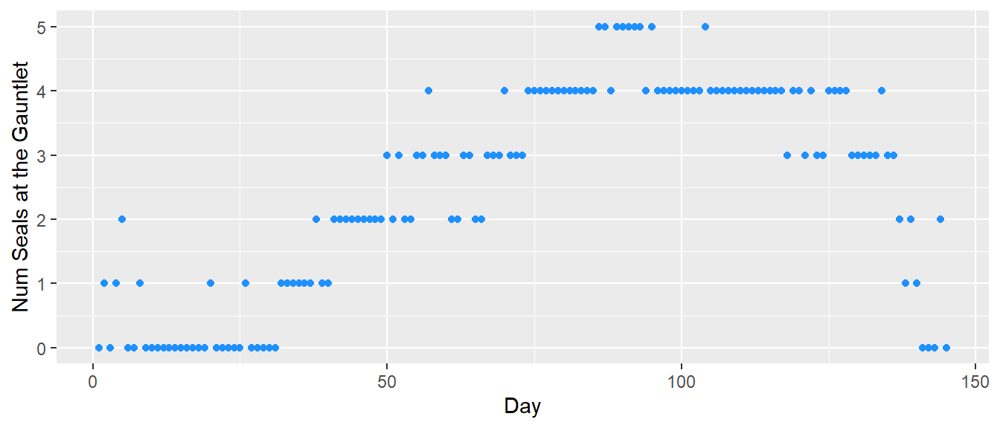
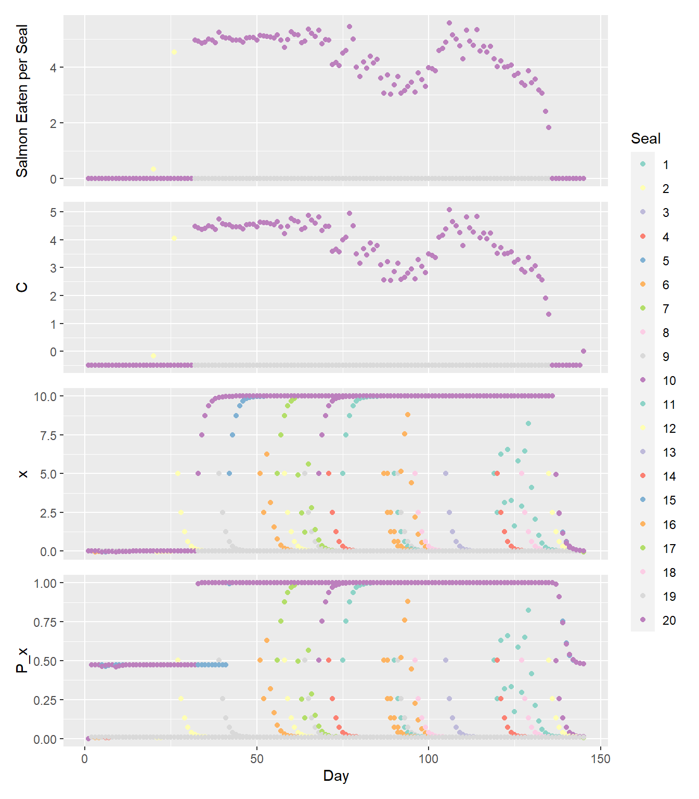
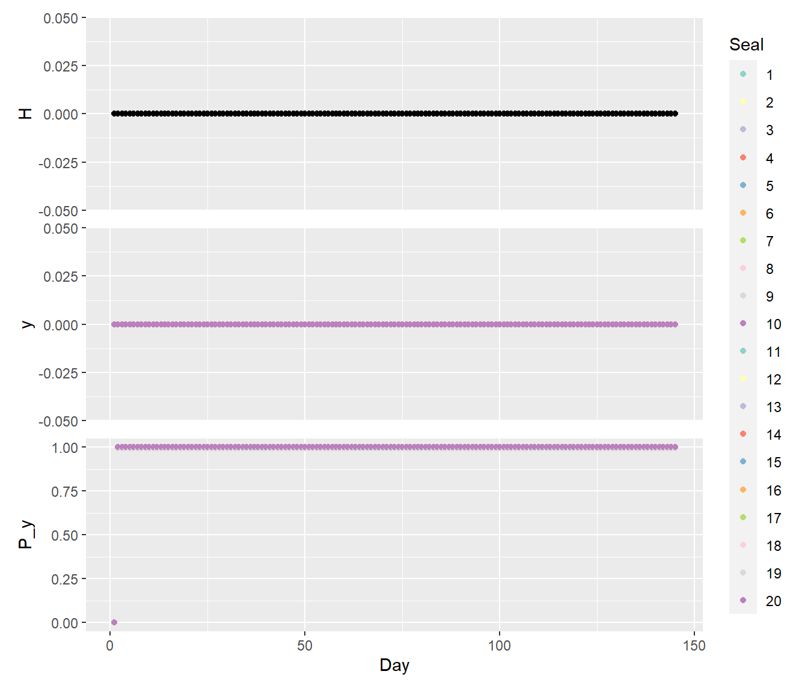
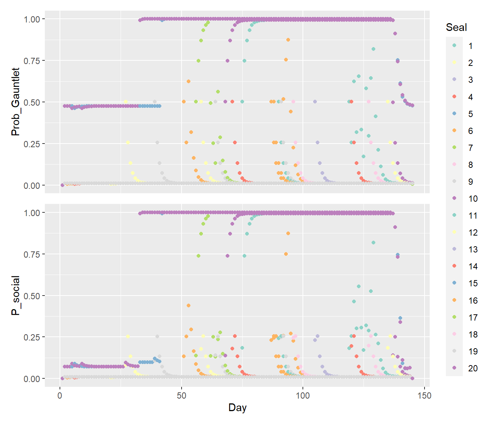

The Base Run Realm
Describing the Base Run
April 02, 2024
The Base Run Realm
This page is currently a place where I am developing the base run and
describing the world it exists in. This part sounds really dumb but I
need a quick way to describe the world and differentiate it from the
experimental runs.
Once upon a time in the Base Run Realm there lived 20 seals. In the Base
Run Realm in the State of Ballard there is a river valley called the
Gauntlet. Every summer, salmon of many species flood the Gauntlet and
the seals move to their summer camp at Shilshole to gorge themselves
until they are fat and happy. The people of Ballard also harvest salmon,
and occasionally kill seals incidentally while they are fishing. There
is no designated harvest of seals in the Base Run Realm.
The Daily Flow
The model runs for 365 day starting January 1. Some number of salmon arrive at the Gauntlet each day according to their run timing - Sockeye arrive earliest in the summer, followed by Chinook and then Coho in the fall.
Salmon experience mortality via multiple pathways: consumption by seals, fishery catch, and natural mortality. Salmon that are not killed are able to leave the Gauntlet and become part of the “Escape” crew. The speed at which they move through the Gauntlet is informed by residence time estimates. In the Base Run Realm, the only fishery that exists within the Gauntlet targets Coho for a short window in September - November. [Note here to look at non-tribal, rec and Suquamish regs. And come up with a rate that matches the catch data]
In the Base Run Realm seals learn to balance the risk of being killed by fishers with the rewards of eating salmon. They learn through their own experiences and share information between them. Seals decide whether to go to the Gauntlet each day using a combination of their own experience (P_G) and the experience of other seals (P_social).

Each seal’s individual probability of going to the Gauntlet updates daily according to their cumulative experiences with foraging opportunities and hunting risk at the Gauntlet. The number of salmon that are calculated to be consumed that day are divided evenly between the seals that went to the Gauntlet. For each seal, an adjusted consumption term “C” is calculated to account for the foraging opportunities they missed by going to the Gauntlet instead of somewhere else. For every day that a seal goes to the Gauntlet, the measure of their foraging knowledge “x” either increases due to foraging success (a positive C) or decreases due to unsuccessful foraging (a negative C). If a seal does not go to the Gauntlet, we assume they begin to forget and gain uncertainty in their knowledge of foraging opportunities at the Gauntlet, which causes their opinion of the Gauntlet to decay back to a neutral opinion. The measure of their experience “x” is then used to calculate a probability of going to the Gauntlet based on foraging knowledge alone “P_x”.

A seal’s cumulative experience with hunting also updates daily. Seals are only harvested through incidental take associated with salmon fisheries in the Base Run Realm. Boat-based harvest occurs during the Coho fishery, which is modeled to occur between September and November. During this time, take of seals is a type 2 functional response on the number of fishers on the water. Seals that go to the Gauntlet on a day when a take occurs gain negative experience with the Gauntlet that causes their “y” to decrease. If no hunting occurs, their “y” increases. If a seal does not go to the Gauntlet, they also begin to gain uncertainty about their knowledge and their “y” decays toward a neutral value. Each seal’s “y” is then used to calculate their probability of going to the Gauntlet based on their cumulative experience with hunting “P_y”.

For each seal, P_x and P_y are combined into a single probability of going to the Gauntlet (P_G). A coin flip (random uniform draw) is used to determine whether each seal goes to the Gauntlet that day based on their P_G.

Seals then incorporate social information from 2 randomly chosen seals and their final foraging destination for the day is decided with another coin flip. Their receptivity to social information is informed by the strength of their existing knowledge. A P_G closer to 0.5 indicates ambivalence and means the seal is more receptive to social influence. A P_G closer to 0 or 1 indicates a strong opinion that will not allow the incorporation of social information.

Parameter Table
Here’s a quick (not exhaustive) table of parameter values:
| Value | |
|---|---|
| days | 365.0000 |
| num_seals | 20.0000 |
| num_seals_2_copy | 2.0000 |
| sockeye_escape_rate | 0.3000 |
| chinook_escape_rate | 0.0300 |
| coho_escape_rate | 0.1000 |
| min_fishers | 13.0000 |
| max_fishers | 25.0000 |
| fishery_open | 253.0000 |
| fishery_close | 321.0000 |
| sockeye_fish_rate | 0.0100 |
| chinook_fish_rate | 0.0100 |
| coho_fish_rate | 0.1000 |
| natural_mort | 0.0005 |
| Cmax | 1.0000 |
| alpha | 15.0000 |